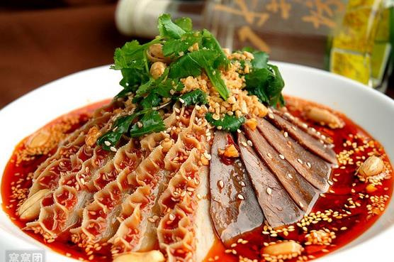
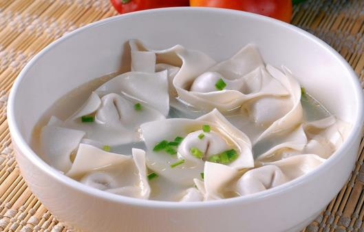
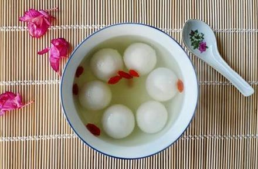
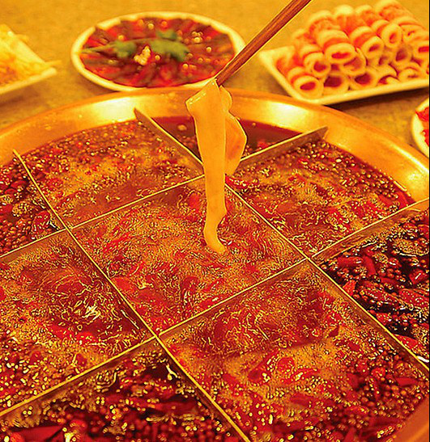

设为首页
/收藏本站
时间：2017/4/26
/天气:多云转晴
首页
景观
美食
游记
风俗
全部
夫妻肺片

由郭朝华、张田政夫妻创制而成。 通常以牛头皮、牛心、牛舌、牛肚、牛肉为主料，进行卤制，而后切片。再配以辣椒油、花椒面等辅料制成红油浇在上面。 夫妻肺片，制作精细，色泽美观，质嫩味鲜，麻辣浓香，非常适口。
龙抄手

龙抄手是成都市著名的传统小吃，抄手是四川人对馄饨的特殊叫法，抄手的得名。成都的“龙抄手”1941年开设于成都的悦来场，上个世纪50年代初迁往新集场，60年代后又迁至春熙路南段至今，迄今已有70余年的历史了。
豆花
豆花是一种用黄豆制作的小吃，个别的会用豌豆、蚕豆等豆类制作。 将黄豆用水泡涨，磨碎过滤出豆浆，豆浆如果加入盐卤或石膏，就会凝结成非常稀软的固体。
汤圆

是由糯米粉等做的球形食品，一般有馅料，煮熟带汤吃，同时也是元宵节最具有特色的食物。历史十分悠久。
火锅

四川火锅，以麻，辣，鲜，香著称，他来源于民间，升华于庙堂，无论是贩夫走卒、达官显宦、文人骚客、商贾农工，还是红男绿女、黄发垂髫，其消费群体涵盖之广泛、人均消费次数之大，都是他地望尘莫及的。作为一种美食，火锅已成为四川和重庆两地的代表美食。
三大炮
三大炮的主要食材为糯米、红糖、芝麻、黄豆，口味香甜。三大炮非凉食，卖时将舂好的半成品糍粑装入锅中至火炉上以微火保温，吃时现做。